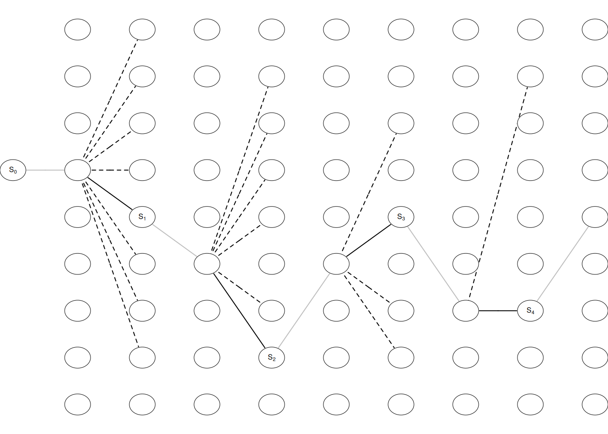

Slides for this module can be seen
here.
You do not have to look at them before the lecture!
3 RL in action
This module learn an agent/player to play tic-tac-toe using Reinforcement learning.
3.1 Learning outcomes
By the end of this module, you are expected to:
- Code your first RL algorithm
- Formulate the blocks of the RL model (environment, agent, data, states, actions, rewards and policies).
- Run your first RL algorithm and evaluate on its solution.
The learning outcomes relate to the overall learning goals number 3, 6 and 9-12 of the course.
3.2 Textbook readings
For this lecture, you will need to read Chapter 1.5 in Sutton and Barto (2018). Read it before continuing this module.
3.3 Tic-Tac-Toe
Tic-Tac-Toe is a simple two-player game where players alternately place their marks on a 3x3 grid. That is, the current state of the board is the players’ marks on the grid. The first player to align three of their marks horizontally, vertically, or diagonally wins the game. Reward for a player is 1 for ‘win’, 0.5 for ‘draw’, and 0 for ‘loss’. These values can be seen as the probability of winning.
Examples of winning, loosing and a draw from player Xs point of view:
|
|
|
We start with an empty board and have at most 9 moves (a player may win before). If the opponent start and a state denote the board before the opponent makes a move, then a draw game may look as in Figure 3.1. We start with an empty board state \(S_0\), and the opponent makes a move, next we choose a move \(A_0\) (among the empty fields) and we end up in state \(S_1\). This continues until the game is over.

3.4 Colab
During the lecture for this module we will work with the tutorial where we learn how to play the game using RL. You will both test your coding skills and the dilemma between exploration and exploitation. Should the agent sacrifice what is currently known as the best action to explore a (possibly) better opportunity, or should it just exploit its best possible policy? Exploitation takes the action assumed to be optimal with respect to the data observed so far. Exploration does not take the action that seems to be optimal. That is, the agent explore to find new states that may be better.
Colab - Before the lecture
Open the tutorial:
- Have a look at the notebook and run all code cells.
- Try to understand the content.
3.5 Summary
Read Chapter 1.6 in Sutton and Barto (2018).
3.6 Exercises
Below you will find a set of exercises. Always have a look at the exercises before you meet in your study group and try to solve them yourself. Are you stuck, see the help page. Sometimes hints and solutions can be revealed. Beware, you will not learn by giving up too early. Put some effort into finding a solution!
You can find all these exercises as a section in this Colab notebook. If you already have your own copy use this.
3.6.1 Exercise - Self-Play
Consider Tic-Tac-Toe and assume that instead of an RL player against a random opponent, the reinforcement learning algorithm described above played against itself. What do you think would happen in this case? Would it learn a different way of playing?
Solution
If the exploration parameter is non-zero, the algorithm will continue to adapt until it reaches an equilibrium (either fixed or cyclical). You may try to code it.
3.6.2 Exercise - Symmetries
Many tic-tac-toe positions appear different but are really the same because of symmetries.
How might we amend the reinforcement learning algorithm described above to take advantage of this?
SolutionIt is possible to use 4 axis of symmetry to essentially fold the board down to a quarter of the size.
In what ways would this improve the algorithm?
SolutionA smaller state space would increase the speed of learning and reduce the memory required.
Suppose the opponent did not take advantage of symmetries. In that case, should we? Is it true, then, that symmetrically equivalent positions should necessarily have the same value?
SolutionIf the opponent did not use symmetries then it could result in a worse learning. For example, if the opponent always played correct except for 1 corner, then using symmetries would mean you never take advantage of that information. That is, we should not use symmetries too since symmetrically equivalent positions do not always hold the same value in such a game.
3.6.3 Exercise - Greedy Play
Consider Tic-Tac-Toe and suppose the RL player is only greedy (\(\epsilon = 0\)), that is, always playing the move that that gives the highest probability of winning. Would it learn to play better, or worse, than a non-greedy player? What problems might occur?
Solution
As seen in Section @ref(rl-intro-tic-learn) using \(\epsilon = 0\) may be okay for this game if the opponent use a simple strategy (e.g. random or first index). However, in general the RL player would play worse. The chance the optimal action is the one with the current best estimate of winning is low and depending on the gameplay the RL player might win or loose. The RL player would also be unable to adapt to an opponent that slowly alter behavior over time. required.
3.6.4 Exercise - Learning from Exploration
Consider Tic-Tac-Toe and suppose the RL player is playing against an opponent with a fixed strategy. Suppose learning updates occur after all moves, including exploratory moves. If the step-size parameter is appropriately reduced over time (but not the tendency to explore), then the state values would converge to a set of probabilities.
What are the two sets of probabilities computed when we do, and when we do not, learn from exploratory moves?
SolutionThe probability set \(V(s)\) found by applying no learning from exploration is the probability of winning when using the optimal policy. The probability set \(V(s)\) found by applying learning from exploration is the probability of winning including the active exploration policy.
Assuming that we do continue to make exploratory moves, which set of probabilities might be better to learn? Which would result in more wins?
SolutionThe probability set found by applying no learning from exploration would result in more wins. The probability set found by applying learning from exploration is better to learn, as it reduces variance from sub-optimal future states.
3.6.5 Exercise - Other Improvements
Consider Tic-Tac-Toe. Can you think of other ways to improve the reinforcement learning player?
Solution
Altering the exploration rate/learning based on the variance in the opponent’s actions. If the opponent is always making the same moves and you are winning from it then using a non-zero exploration rate will make you lose you games. If the agent is able to learn how the opponent may react to certain moves, it will be easier for it to win as it can influence the opponent to make moves that leads it to a better state.